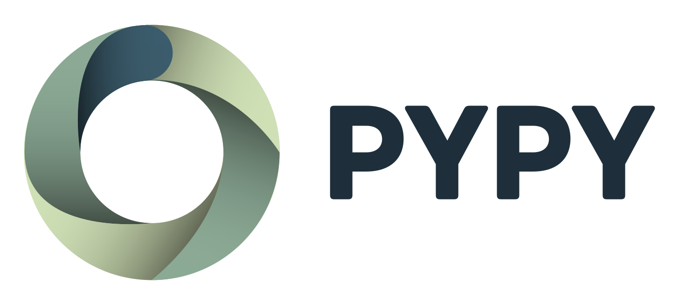

Python Compiler Workshop
11. July 2016, Austin Texas
Matti Picus & Richard Plangger
PyPy's Niche
Mature & production-ready Python VM
Accelerating pure Python code
up to 7x on average
PyPy's is used
In many differnt commercial settings
What We Bring to the Table
Our core is based on cutting-edge JIT compiler
research, written in Python.
Written in Python
Being written in Python means we can quickly
try out (and reject or incorporate) new ideas.
For instance, our STM work has
uncovered subtle bugs in CLANG and GCC, or the fact that we can easily try out
new register allocation strategies.
Took us some time too
... but runs on all major platforms
Linux, Windows, MacOS, ...
including four different CPU architectures
x86, arm, ppc, s390x
RPython
High level language to aid the construction of VMs
Flow graphs → Annotation → RTyping → Code generation
- + Whole program optimizations (take that, C)
- + Deliver features quickly, without sacrificing speed
- + Loosely coupled (JIT, Interp., RPython)
- - Takes a while to translate
Packaging & Distriubtion
More successful in improving core technologies than creating a
end-user friendly nicely packaged distribution.
PyPy is extremly "under-funded"
We are not pushing data science on PyPy at all,
slowly moving forward on a volunteer basis.
→ C-API compatibility
Does PyPy run out of the box?
More help in identifying and resolving small issues
Increase user experience, not discurage many dev's
NumPy
We are also working on Micro NumPy, which provides the kernels for numerical operations.
It is very usable, but still some features are missing. We would love to have a
partner/company that would help us to complete NumPy for PyPy.
JIT compiler
Optimizing dynamic languages on a high and low level
Towards a new version of our JIT
Open to new ideas
Writing a program in statically compiled language
does not mean the dev time / speedup ratio is appropriate
neither does it mean you program is fast
Exposing details of your VM impl.
is bad.
and caused PyPy a lot of troubles
Dynamic typed languages
are slow?
and cannot be used for big programs?
Method based JIT compilers
is the only concept that works *cough*
Let's apply
static compiler techniques to speed up dynamic langues